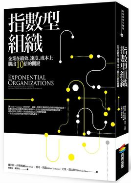
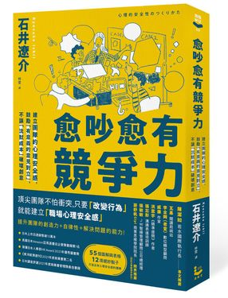

2026-05-07
Answer
2026年台積電營收成長近三成，動能來自尖端製程與先進封裝雙重引擎
台積電預計在2026年實現近三成的美元營收顯著成長，此一關鍵增長動能主要歸因於兩大核心技術的突破與量產推進：一是2奈米製程的產能爬坡與營收爆發，二是CoWoS與SoIC等先進封裝技術的一站式服務整合。這兩項技術的同步放量，不僅鞏固了台積電在半導體產業的領先地位，更使其成為全球AI及高效能運算需求的主要供應者。
2奈米製程預計將在2026年迎來產能爬坡與營收貢獻的爆發期。此製程採用全新的奈米片GAA（Gate-All-Around）架構，其卓越的功耗效能比吸引了包括蘋果（Apple）、輝達（NVIDIA）及高通（Qualcomm）等一線大廠的青睞，使得客戶訂單需求強勁，直接推升了2026年的年度合併營收成長態勢。隨著AI晶片對更高運算能力與能源效率的需求日益迫切，2奈米製程的技術優勢將是驅動營收增長的關鍵。
同時，CoWoS（Chip-on-Wafer-on-Substrate）與SoIC（System-on-Integrated-Chips）等先進封裝技術，亦將扮演業績成長的第二引擎。AI晶片對頻寬、整合度及封裝複雜度的要求極高，台積電透過提供整合晶圓代工與先進封裝的一站式服務，將兩者深度綁定，不僅有效拉高了訂單的平均單價，更築起了對競爭者而言難以跨越的技術與服務壁壘。這種深度整合的商業模式，使得台積電能更好地滿足客戶對高效能運算晶片的嚴苛需求，並進一步鞏固其市場領導地位。
此外，AI需求被視為真實且長期的趨勢，是驅動台積電業績持續增長的核心動力。從雲端運算到邊緣裝置，AI應用的滲透範圍不斷擴大，這直接轉化為對先進製程及高效能晶片龐大的剛性需求。台積電透過持續的技術研發與產能擴張，精準掌握了這一趨勢，並透過其在2奈米製程與先進封裝上的領先優勢，成為滿足全球AI算力需求的最關鍵供應鏈環節。公司預估2026年資本支出將上修至520億至560億美元，顯示其對未來成長動能的充足信心與積極佈局。
指數型組織Salim Ismail亞馬遜讀者超過200人5星推薦 1. 論述完整清晰，以明確的流程步驟，說明指數型組織的關鍵屬性與建立方式 2. 眾多現實案例剖析，無論產業新舊、規模大小或人數多寡，都有足以參考的轉型範本 3. 符合加速時代的組織管理完整新論述，擘畫出瞬息萬變、資訊變化迅速的年代所需要的組織新模型。 【在加速化的年代，你的組織需要轉變為「指數型組織」】 歡迎來到指數時代，在這個加速化的年代中，你要如何掌控這一切？你要如何吸引人才，建立起一家在速度、專業和創新能力上都能與指數時代相配合的企業呢？答案是要建立「指數型組織」！ 指數型組織是指一個組織在使用了新型槓桿化加速技術後，其影響力或產出比同行有不成比例的巨大——至少必須十倍大。 Google、Amazon、阿里巴巴、蘋果、特斯拉、GE……無論是新創、網路業或傳統產業，它們的業績都能夠創造指數型爆發，其中的祕密就是指數型組織！ 當數位科技以指數型曲線加速變革，企業必須跳脫傳統線性發展思維，成為可以充分擴張、快速發展而且具有智慧的組織，才能在加速創新與競爭的時代成為贏家！

從A到A+Jim Collins●第五級領導：能推動企業邁向卓越的領導人員具備什麼樣的特質？他們通常沉默內斂、不愛出風頭，甚至有點害羞，謙沖為懷的人格特質和不屈不撓的專業堅持齊集於一身。 ●先找對人，再決定要做什麼：柯林斯團隊原以為「從優秀到卓越」的領導人上任之初，一定先提出新願景、新策略，卻發現他們忙著找到適合的人上車，請不適任的人下車，並且把對的人放在對的位子上，然後才釐清該把車子開往哪個方向。●面對殘酷現實，但絕不喪失信心：所有從「從優秀到卓越」的公司邁向卓越之路，都先從誠實面對眼前的殘酷現實開始。因此，領導人必須塑造能聽到真畫且不掩蓋事實的企業文化。
心理安全感的力量Amy C. Edmondson在今天合作與創新定成敗的世界，只擁有聰明能幹、企圖心強的人才不見得有績效，更重要的是必須讓聰明又有企圖的人不怕犯錯地把知識用出來、能卸下心防合作，才能在變化中找出新路徑！工業時代，個人完美執行最佳實務就能績效卓越；在知識密集的創新時代，高效率要靠協作、共創，最被忽略的績效要素是團隊中沒有人說出口的「心理安全感」！心理安全感指的是，組織成員相信自己不會因發表了某個想法、疑問、關切，乃至犯錯，而受到懲罰、侮辱或報復。
刻意練習Anders Ericsson / Robert Pool堆人學鋼琴、小提琴、舞蹈、圍棋、各項運動，為什麼有些人可以有高手級表現，大部分人卻只有「可接受」的水準？多數人相信原因出在天賦，但本書作者安德斯‧艾瑞克森根據三十多年的研究發現，所謂天賦其實是人類大腦和身體的適應力，只要透過正確的練習，亦即「刻意練習」，善用大腦和身體的適應力，每個人都能改善技能，甚至創造出你本來以為自己沒有的能力，達到顛峰表現。本書提供的革命性方法，將告訴你精通幾乎任何事物的訣竅。這可能是人類第一次擁有關於如何練成天才的統一理論！
愈吵愈有競爭力石井遼介根據哈佛商學院教授、全球Thinkers 50管理思想家──艾美‧艾德蒙森的研究，以及Google歷經四年的調查分析「何謂有成效的團隊」，皆指出「心理安全感」才是打造高績效團隊的關鍵，如何建立組織成員的心理安全感，也成為當代管理學研究的焦點。在具有「心理安全感」的工作環境，團隊中的成員可以挺身建言、公開交流、提供想法，遇到失敗與困難，也能坦言求助與提出問題，不用擔心被懲罰、被誤會及冒犯。大家更樂於參與、分享情報，即便是吵架，成員也能貢獻點子，從正反意見中找出更好的解決方法，成為冠軍團隊！

警語
本頁面由AI生成，可能會發生錯誤。請查核重要資訊。
使用本AI生成內容服務即表示您同意此內容僅供個人參考非商業用途，任何轉載分享皆不得違反法律或侵犯智慧財產權，且您了解輸出內容可能不準確，所有爭議遠見天下文化出版股份有限公司保有最終解釋權。